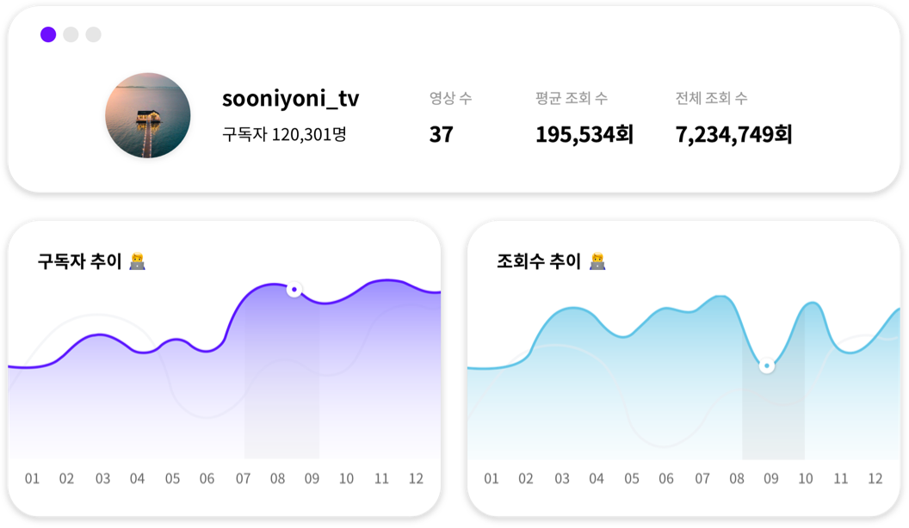
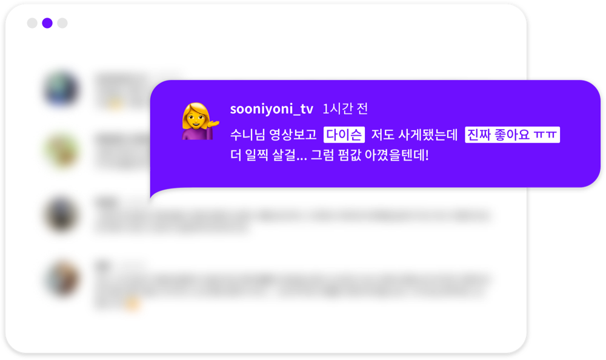
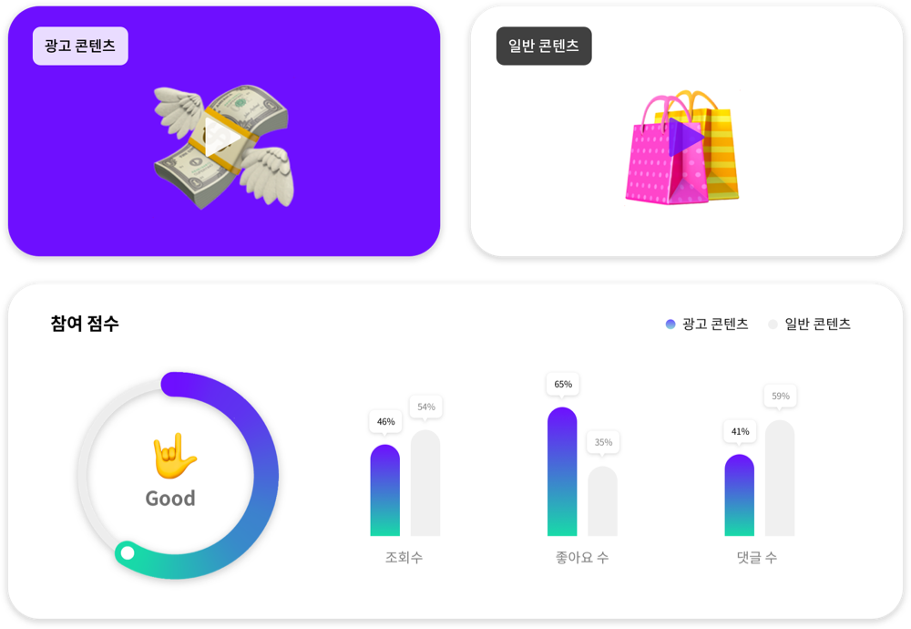

Youtube Report
Data-Driven Marketing
유튜브 리포트와 함께
이젠 추측하지 말고 확신하세요.
피처링 리포트는 광고 영상과 일반 영상을
비교 분석해 보여드립니다.
피처링 리포트는 광고 영상과 일반 영상을
비교 분석해 보여드립니다.

GIF삽입될 영역입니다.
GIF 디자인 분위기에 따라 하단 브랜드 로고영역 사용해주세요.
GIF 디자인 분위기에 따라 하단 브랜드 로고영역 사용해주세요.
채널 기본 정보,
핵심 정보만 선별
유튜버 활동 및 채널 활성화 정도에 따른 기본 지표 들을 한
눈에 확인하세요. 구독자와 조회수 추이는 채널의 성장세를
고객님의 자사 상품과 fit이 잘 맞는 인플루언서를 찾고
파악하는데 도움이 됩니다.
눈에 확인하세요. 구독자와 조회수 추이는 채널의 성장세를
고객님의 자사 상품과 fit이 잘 맞는 인플루언서를 찾고
파악하는데 도움이 됩니다.

시청자 분석,
AI 고도화 예측시스템
예상 연령 및 성별, 사용언어를 통해 명확한 타겟팅을 시작
해보세요. 시청자의 댓글 중 유의미한 키워드들은 광고할 상
품에 대한 관심도를 추측하는 데 효과적입니다.
해보세요. 시청자의 댓글 중 유의미한 키워드들은 광고할 상
품에 대한 관심도를 추측하는 데 효과적입니다.

광고 영상 분석,
혁신적인 상품 판별 엔진
일반 콘텐츠와 광고 콘텐츠 간 상세 비교를 통해 광고 효능
감 이 높은 유튜버를 찾아보세요. 영상 내에서 어떤 상품이,
얼마나 언급되고 있는지와 함께 시청자들의 제품 및 서비스
에 대한 관여도도 함께 확인하세요.
감 이 높은 유튜버를 찾아보세요. 영상 내에서 어떤 상품이,
얼마나 언급되고 있는지와 함께 시청자들의 제품 및 서비스
에 대한 관여도도 함께 확인하세요.
